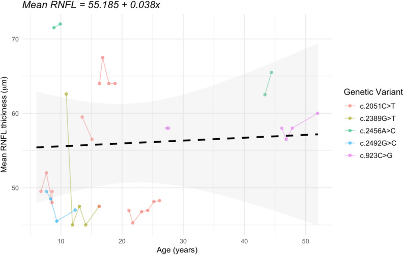
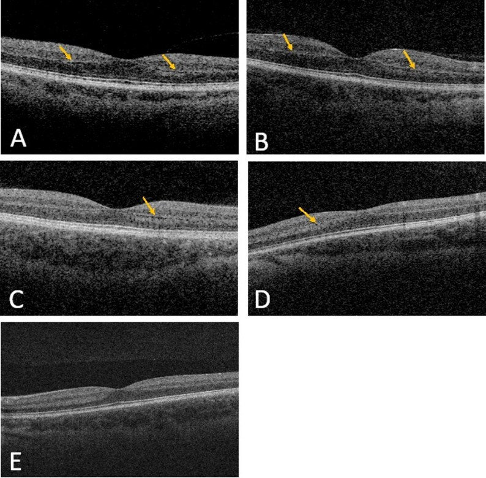
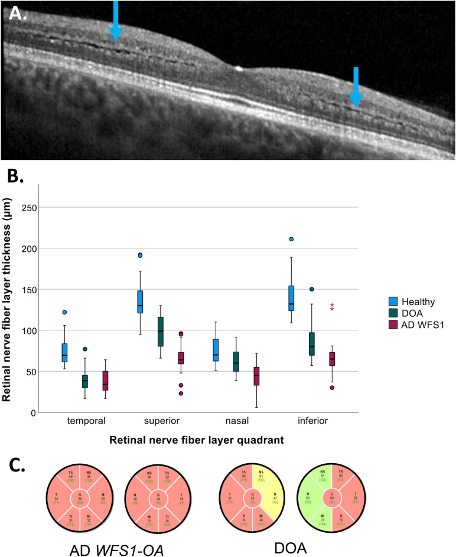
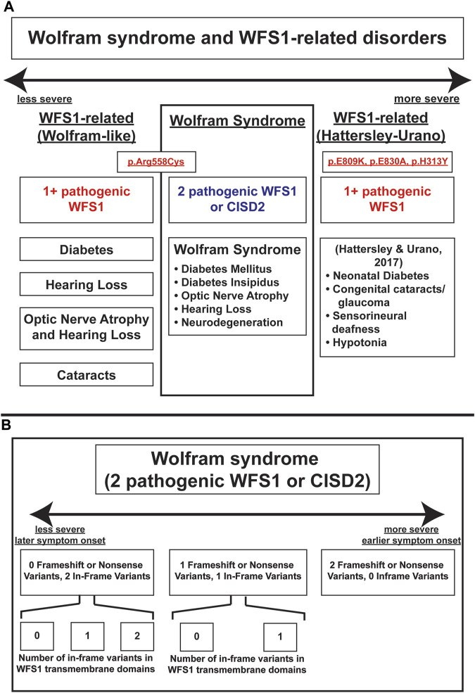

499 — Hội chứng Hattersley–Urano & phổ WFS1 trội / Hattersley–Urano syndrome and the autosomal dominant WFS1 spectrum
Tags: pattern:teo-thi pattern:diec-thi-giac pattern:dai-thao-duong-so-sinh pattern:duc-the-thuy-tinh vung:than-kinh-thi vung:tai-trong vung:tuy protocol:OCT-RNFL-GCL protocol:audiometry-ABR protocol:NGS-WFS1 score:logMAR
Mức chắc chắn (certainty): tổng hợp y văn (literature synthesis) — nhóm tự biên từ các bài mở 2017–2026: tự nhiên học 15 bệnh nhân WFS1 trội (Orphanet J Rare Dis 2026, CC BY 4.0, PMC13224583), 22 bệnh nhân WFS1 trội so với OPA1 (Sci Rep 2024, CC BY-NC-ND 4.0, PMC11450207), 5 ca Hattersley–Urano (Diabetes 2017, PMC5482085 — chỉ đọc phần tóm tắt, bản toàn văn không mở trong lần tra này) và phổ phân độ Wolfram/WFS1 (Front Genet 2023, CC BY 4.0, PMC10321297).
Vì sao bài này quan trọng: bài 437 đã dạy nhận diện "teo thị + điếc" và bài 479 dạy xử lý biến thể VUS. Nhưng có một nhóm hoàn toàn khác về mức nặng: trẻ đái tháo đường sơ sinh + điếc bẩm sinh + đục thể thủy tinh bẩm sinh — Hội chứng Hattersley–Urano do một biến thể WFS1 trội. Bỏ sót nghĩa là gọi trẻ là "ĐTĐ týp 1", bỏ đục thể thủy tinh, bỏ điếc, và không tầm soát gia đình dù 50% nguy cơ cho mỗi con.
1. Tổng quan — một gen, hai mức nặng: vì sao Hattersley–Urano khác hẳn Wolfram lặn
- WFS1 (4p16.1) mã hóa wolframin, protein màng lưới nội chất (ER) 8 exon, điều hòa canxi ER, đáp ứng stress ER (ATF6) và vận chuyển ATP1B1 ra màng tế bào. Tế bào beta, ốc tai và thể thủy tinh đều sống dựa vào cân bằng ER — nên cùng một gen, ba cơ quan cùng hỏng.
- Vì sao lặn = Wolfram kinh điển: hai biến thể mất chức năng (LOF) → mất hoàn toàn wolframin → hỏng dần theo tuổi. Tuổi khởi phát trung vị trong một tổng hợp lớn: ĐTĐ 6,0 tuổi — teo thị 11,0 — đái tháo nhạt 13,0 — điếc 14,0 (PMC10321297).
- Vì sao trội = phổ từ nhẹ đến rất nặng: biến thể missense nằm ở domain lòng ER (6/7 biến thể trong PMC13224583) tạo protein gấp sai → stress ER trội. Mức độ phụ thuộc vị trí và kiểu biến thể, không phụ thuộc "trội thì nhẹ":
- Thể thường gặp — teo thị + điếc (AD WFS1-OA): điếc trước, teo thị sau. 15 bệnh nhân: điếc 2,0 tuổi (IQR 1,0–2,5), teo thị 10 tuổi (IQR 7,0–17,5); 15/15 dùng máy trợ thính, 8/15 cấy ốc tai hai bên; trễ từ chẩn đoán điếc đến đeo máy trợ thính 2,2 năm (PMC13224583).
- Thể nặng — Hattersley–Urano: ĐTĐ sơ sinh/nhũ nhi + điếc tiếp âm bẩm sinh + đục thể thủy tinh bẩm sinh + giảm trương lực + chậm phát triển (PMC10321297; De Franco 2017). 5 ca: ĐTĐ < 12 tháng (5/5, 2 ca < 6 tháng), điếc ngay sau sinh (5/5), đục TTT 4/5, giảm trương lực 4/5, 4/5 de novo; 5 ca được tìm thấy trong 311 trẻ ĐTĐ khởi phát < 1 tuổi (1,6%) đã loại trừ nguyên nhân đã biết.
- Hai điểm định lượng quyết định thái độ theo dõi:
- Teo thị của WFS1 trội KHÔNG tiến triển nhanh: BCVA trung bình chỉ giảm 0,052 logMAR/năm (p = 0,159) và RNFL 0,038 µm/năm (p = 0,829) — tức ổn định trong nhiều năm (PMC13224583). Đừng mặc định "teo thị di truyền = mù dần nhanh"; đây cũng là điểm khác với LHON (mất thị lực cấp trong vài tuần–vài tháng).
- Dấu hiệu OCT đặc trưng: phân lớp lớp rối ngoài (outer plexiform layer — OPL lamination) gặp 6/8 (75%) ca có OCT (PMC13224583) và không có ở DOA/OPA1 (PMC11450207). Đây là "chốt vào" rẻ tiền nhất trên máy OCT thường.
- Đái tháo đường trong thể teo thị + điếc: 2/15 (13%) (PMC13224583) và 7/22 (32%) (PMC11450207) — tức không phải cứ WFS1 trội là có ĐTĐ, nhưng phải tầm soát định kỳ vì có thể xuất hiện muộn.

*RNFL trung bình theo tuổi (11 bệnh nhân): đường đứt nét 55,185 + 0,038 × tuổi — độ dốc 0,038 µm/năm (p = 0,829), tức không mất RNFL đáng kể theo thời gian trong cohort này. Nguồn: Roberts JP et al., Orphanet J Rare Dis 2026, Fig. 3 (PMC13224583), CC BY 4.0.*2. Mẫu hình + gamut theo kiểu hình (Gamut)
- Kiểu hình 1 — ĐTĐ sơ sinh/nhũ nhi + điếc + đục TTT: nghĩ Hattersley–Urano (WFS1 trội nặng) trước tiên; sau đó Wolfram lặn, kênh KATP (KCNJ11/ABCC8), nhiễm trùng bẩm sinh (rubella/CMV).
- Kiểu hình 2 — điếc tần số thấp/điếc tiếp âm ở trẻ + teo thị ở tuổi học đường: AD WFS1-OA là hàng đầu; phân biệt OPA1 DOA+, điếc di truyền không hội chứng (GJB2/OTOF), bệnh ty thể m.3243A>G.
- Kiểu hình 3 — đục thể thủy tinh sớm đơn độc: WFS1 trội là nguyên nhân hiếm nhưng có thật; hỏi thêm điếc/ĐTĐ trong gia đình.
- Kiểu hình 4 — ĐTĐ + điếc ở người trưởng thành: m.3243A>G (MIDD) và Alström (ALMS1) cạnh tranh với WFS1; đừng mặc định WFS1.
- Gợi nhớ phổ WFS1 bằng 4 chữ cái hỏng dần: H-O-D-W — Hearing (điếc) → Optic atrophy → Diabetes → Water (đái tháo nhạt, chủ yếu thể lặn). Thứ tự này phản ánh thời điểm thường gặp, không phải mức nặng.
3. Bảng so sánh phân biệt (ma trận đối chiếu)
| Thực thể (entity) | Hình ảnh / lâm sàng điển hình | Chốt vào (rule-in) | Chốt loại (rule-out) | Gợi ý xác nhận |
|---|---|---|---|---|
| Hattersley–Urano (WFS1 trội nặng) | ĐTĐ < 12 tháng + điếc tiếp âm bẩm sinh + đục TTT bẩm sinh + giảm trương lực/chậm phát triển | Tam chứng sơ sinh + một biến thể WFS1 missense trội (p.Glu809Lys, p.Glu830Ala, p.His313Tyr) | Không có ĐTĐ sơ sinh + đục TTT muộn → thể AD WFS1 thường; đái tháo nhạt rõ → nghĩ Wolfram lặn | Giải trình tự WFS1 + MLPA (mất đoạn); giải trình tự bố mẹ (de novo 4/5) |
| Wolfram lặn (WFS1/CISD2) | ĐTĐ 6,0 tuổi → teo thị 11,0 → đái tháo nhạt 13,0 → điếc 14,0; teo não, rối loạn tâm thần | 2 biến thể LOF + đái tháo nhạt + teo thị + điếc | Chỉ 1 biến thể + không đái tháo nhạt → không phải thể lặn | WFS1 hai alen; osmolality niệu; MRI não |
| AD WFS1-OA (teo thị + điếc) | Điếc 2 tuổi, teo thị 10 tuổi; OPL lamination trên OCT; RNFL mỏng lan tỏa; rối loạn sắc giác đỏ–lục | OPL lamination (6/8) + điếc trước teo thị + tiền sử gia đình trội | OPL bình thường + sắc giác xanh–vàng + RNFL chỉ thái dương → OPA1 | OCT RNFL/GCL; audiogram; WFS1 |
| OPA1 DOA+ | Teo thị khởi phát thập niên 1, RNFL thái dương, sắc giác xanh–vàng; 20% có điếc/ataxia/myopathy | RNFL thái dương + sắc giác xanh–vàng + missense GTPase | OPL lamination + sắc giác đỏ–lục → WFS1 | OPA1 + MLPA; ERG/VEP |
| m.3243A>G (MIDD) | ĐTĐ + điếc ở người lớn, loạn dưỡng hoàng điểm dạng hạt, tầm vóc thấp, mẹ bị tương tự | Tiền sử mẹ + loạn dưỡng hoàng điểm + lactate cao | ĐTĐ sơ sinh + đục TTT bẩm sinh → không phải MIDD | mtDNA; lactate; đáy mắt |
| ĐTĐ sơ sinh do kênh KATP (KCNJ11/ABCC8) | ĐTĐ < 6 tháng, không điếc, không đục TTT; có thể đáp ứng sulfonylurea | ĐTĐ đơn độc + đột biến kênh KATP | Điếc bẩm sinh + đục TTT → WFS1 | Panel ĐTĐ sơ sinh |
| Nhiễm trùng bẩm sinh (rubella/CMV) | Đục TTT + điếc + chậm phát triển; không ĐTĐ sơ sinh; CMV có vôi hóa quanh não thất | IgM/PCR dương + vôi hóa não/thính lực | ĐTĐ khởi phát < 12 tháng → không giải thích được bằng rubella/CMV | Rubella IgM; CMV PCR nước tiểu/máu |
| Alström (ALMS1) | ĐTĐ + điếc + loạn dưỡng võng mạc (không phải teo thị đơn thuần) + béo phì, cơ tim | Béo phì + loạn dưỡng võng mạc + ĐTĐ | Teo thị đĩa đơn thuần + OPL lamination → WFS1 | ALMS1; OCT/ERG |

A–E: OCT hoàng điểm của 5 bệnh nhân WFS1 trội. Mũi tên vàng = phân lớp OPL (OPL lamination) — dấu hiệu đặc trưng, gặp 6/8 ca có OCT. Ca E (bệnh nhân 13) không có phân lớp rõ. Nguồn: Roberts JP et al., Orphanet J Rare Dis 2026, Fig. 4 (PMC13224583), CC BY 4.0.
A: phân lớp OPL (mũi tên xanh) ở WFS1 trội. B: RNFL theo 4 vùng — WFS1 mỏng lan tỏa, OPA1/DOA mỏng thái dương là chính. C: bản đồ GCIPL — WFS1 mất lan tỏa, DOA mất thái dương. Nguồn: de Muijnck C et al., Sci Rep 2024, Fig. 2 (PMC11450207), CC BY-NC-ND 4.0 — nguyên bản, không crop/ghép.4. Protocol — từ tam chứng sơ sinh đến lịch theo dõi
Bước 1 — nhận diện sớm (sơ sinh/nhũ nhi):
- ĐTĐ < 6 tháng → xét nghiệm gen là bước đầu, không chờ tự kháng thể: KCNJ11, ABCC8, INS, WFS1, GCK (panel ĐTĐ sơ sinh).
- Điếc bẩm sinh → ABR/ASSR + OAE; nếu ABR mất sóng nhưng có sóng vi âm ốc tai (CM) → điếc tiếp âm (ANSD) — gặp ở WFS1 và OPA1.
- Đục thể thủy tinh bẩm sinh → soi đáy mắt giãn đồng tử, siêu âm B nếu không thấy đáy mắt, OCT cầm tay khi hợp tác được.
- Ba dấu hiệu cùng lúc = chỉ định WFS1 ngay, kèm giải trình tự + MLPA/mất đoạn và giải trình tự bố mẹ (de novo 4/5 nhưng 1/5 di truyền → bố mẹ cũng phải khám).
Bước 2 — đo cái đo được (định lượng):
- Mắt: BCVA logMAR (trẻ nhỏ dùng Teller/preferential looking), OCT RNFL + GCL theo máy và chuẩn tuổi, OPL lamination, sắc giác (Lanthony D-15), thị trường khi ≥ 6–7 tuổi.
- Tai: audiogram/ABR ngưỡng, phân biệt ANSD, đánh giá máy trợ thính (trễ trung vị 2,2 năm trong PMC13224583 — đây là chỉ số chất lượng, không phải chỉ số y khoa).
- Nội tiết: HbA1c mỗi 3 tháng; C-peptide; tự kháng thể GAD/IA2/ZnT8 âm mới phù hợp WFS1; osmolality máu/niệu + thể tích nước tiểu 24 giờ tìm đái tháo nhạt (thể trội thường không có).
- Thần kinh–phát triển: Bayley-III/Griffiths; MRI não nếu giảm trương lực, chậm phát triển, co giật.
Bước 3 — lịch theo dõi (thực hành, chưa có guideline riêng cho Hattersley–Urano):
- Mắt: khám + OCT mỗi 6–12 tháng ở trẻ, mỗi 1–2 năm khi ổn định; sau mổ đục TTT phải theo dõi glaucoma (Hattersley–Urano có glaucoma trong phổ bệnh).
- Tai: mỗi 6–12 tháng đến khi ổn định; đánh giá cấy ốc tai sớm nếu ANSD nặng (8/15 ca trong PMC13224583 đã cấy hai bên).
- Nội tiết: HbA1c 3 tháng/lần; tầm soát đái tháo nhạt mỗi năm hoặc khi khát/tiểu nhiều.
- Gia đình: bố mẹ/anh chị em audiogram + đáy mắt/OCT + HbA1c/OGTT; tư vấn 50% cho mỗi con, biểu hiện có thể rất khác nhau trong cùng gia đình.
flowchart TD
A[Sơ sinh hoặc nhũ nhi: ĐTĐ + điếc + đục thể thủy tinh] --> B{ĐTĐ khởi phát dưới 12 tháng?}
B -->|Có| C[Panel ĐTĐ sơ sinh + WFS1 giải trình tự và MLPA]
B -->|Không| D[Panel teo thị và điếc: OPA1, WFS1, mtDNA, GJB2/OTOF]
C --> E{Biến thể WFS1 trội đã P/LP?}
E -->|Có| F[Hattersley-Urano: khám mắt, tai, nội tiết, phát triển toàn diện]
E -->|Không rõ - VUS| G[Xem bài 479: phân ly, de novo, chức năng - không kết luận sớm]
D --> H{Có OPL lamination trên OCT?}
H -->|Có| I[AD WFS1-OA: điếc trước, teo thị sau]
H -->|Không| J[OPA1 DOA+ hoặc nguyên nhân khác]
F --> K[Giải trình tự bố mẹ + tư vấn 50 phần trăm]
I --> K
5. Biến thể bình thường và cạm bẫy
- Cạm bẫy 1 — "ĐTĐ ở trẻ = týp 1". ĐTĐ < 6 tháng gần như không bao giờ là týp 1 tự miễn; tự kháng thể âm + điếc + đục TTT là tam chứng phải xét nghiệm gen. Gọi sai làm mất cơ hội chẩn đoán kênh KATP (đáp ứng sulfonylurea) và bỏ tầm soát gia đình.
- Cạm bẫy 2 — "Trội thì nhẹ". Đúng với đa số, sai với Hattersley–Urano. Mức nặng do loại/vị trí biến thể, không do kiểu di truyền.
- Cạm bẫy 3 — bỏ điếc vì trẻ "vẫn nghe được". Điếc 2 tuổi đứng trước teo thị 10 tuổi tới 8 năm; không đo ABR/audiogram là bỏ sót giai đoạn vàng của máy trợ thính/ốc tai.
- Cạm bẫy 4 — gọi OPL lamination là "artifact" hoặc "bệnh võng mạc tuổi già". Ở trẻ/người trẻ có teo thị + điếc, phân lớp OPL là dấu hiệu gợi ý WFS1 và không có ở OPA1 (PMC11450207). Ngược lại, không có OPL lamination không loại trừ (2/8 ca không rõ).
- Cạm bẫy 5 — loại WFS1 vì không có đái tháo nhạt. Thể trội thường không có đái tháo nhạt; chỉ thể lặn mới có trong 4 triệu chứng lõi.
- Cạm bẫy 6 — hứa "mắt sẽ ổn định mãi". BCVA/RNFL ổn định trong cohort 15 ca (p = 0,159 và 0,829), nhưng đó là trung bình; vẫn có ca nặng và vẫn phải theo dõi.
- Cạm bẫy 7 — dùng VUS để chẩn đoán Hattersley–Urano. Cần biến thể P/LP + kiểu hình; VUS xử lý theo bài 479 (phân ly, de novo, chức năng), không dùng để tiên lượng nặng.
- Cạm bẫy 8 — sau mổ đục TTT không theo dõi nhãn áp. Mắt đã mổ thể thủy tinh ở trẻ dễ glaucoma; Hattersley–Urano có glaucoma trong phổ bệnh — đo nhãn áp mỗi lần khám.

Trục mức nặng: WFS1-related (Wolfram-like) → Wolfram lặn → WFS1-related (Hattersley–Urano) với các biến thể p.Glu809Lys, p.Glu830Ala, p.His313Tyr và ĐTĐ sơ sinh + đục TTT/glaucoma + điếc tiếp âm + giảm trương lực. Nguồn: Lee EM et al., Front Genet 2023, Fig. 4 (PMC10321297), CC BY 4.0.6. Tự lượng giá — Blind Quiz
Ca 1 — Sơ sinh 3 tuần: ĐTĐ khởi phát ngày thứ 18, sàng lọc thính lực thất bại hai tai, đục thể thủy tinh hai bên. Không ai trong nhà bị gì.
- Hỏi: 3 chẩn đoán hàng đầu? Xét nghiệm nào chốt? Câu hỏi nào phải hỏi bố mẹ ngay?
Bấm để hiện đáp án (findings + chẩn đoán)
- Hàng đầu: Hattersley–Urano (WFS1 trội nặng); Wolfram lặn (khởi phát muộn hơn, thường không đục TTT bẩm sinh); ĐTĐ sơ sinh do kênh KATP (không điếc/không đục TTT).
- Chốt: WFS1 giải trình tự + MLPA (mất đoạn) → tìm p.Glu809Lys/p.Glu830Ala/p.His313Tyr hoặc biến thể missense domain lòng ER; giải trình tự bố mẹ (de novo 4/5, nhưng vẫn có 1/5 di truyền).
- Hỏi ngay: mẹ có ĐTĐ thai kỳ? bố/mẹ có điếc hoặc teo thị? vì 50% nguy cơ cho con nếu bố/mẹ mang.
- Việc phải làm trong 48 giờ: ABR/ASSR (phân biệt ANSD), soi đáy mắt + OCT cầm tay, HbA1c/C-peptide, osmolality tìm đái tháo nhạt.
- Nguồn số liệu: De Franco 2017 (PMC5482085) — 5/5 ĐTĐ < 12 tháng, 5/5 điếc sau sinh, 4/5 đục TTT, 4/5 giảm trương lực, 4/5 de novo.
Ca 2 — Bé 8 tuổi đeo máy trợ thính từ 2 tuổi, khám mắt định kỳ phát hiện teo thị hai bên. Không ĐTĐ, không khát nhiều. Mẹ và bà ngoại "mắt kém từ nhỏ".
- Hỏi: chẩn đoán? Dấu hiệu OCT nào giúp phân biệt với OPA1? Có cần tầm soát ĐTĐ không, bao lâu một lần?
Bấm để hiện đáp án (findings + chẩn đoán)
- AD WFS1-OA (teo thị + điếc): điếc 2 tuổi trước teo thị 10 tuổi, tiền sử trội bên mẹ — đúng tự nhiên học (PMC13224583).
- OPL lamination (mũi tên vàng) gặp 6/8 ca WFS1 và không có ở OPA1 (PMC11450207); thêm sắc giác đỏ–lục (WFS1) vs xanh–vàng (OPA1) và RNFL mỏng lan tỏa vs thái dương.
- Có, vẫn phải tầm soát ĐTĐ: 2/15 (13%) trong PMC13224583 và 7/22 (32%) trong PMC11450207 — HbA1c/OGTT mỗi năm, khám tai 6–12 tháng, OCT 1–2 năm.
- Tư vấn: bệnh ổn định nhiều năm (BCVA giảm 0,052 logMAR/năm, p = 0,159; RNFL 0,038 µm/năm, p = 0,829) nhưng 50% cho con.
Ca 3 — Nam 32 tuổi: ĐTĐ 10 năm, điếc 5 năm, mắt mờ dần; không đục TTT bẩm sinh. Mẹ cũng ĐTĐ + điếc, đáy mắt có "đốm vàng quanh hoàng điểm".
- Hỏi: 3 chẩn đoán? Dấu hiệu nào loại WFS1? Xét nghiệm đầu tay?
Bấm để hiện đáp án (findings + chẩn đoán)
- m.3243A>G (MIDD) — ĐTĐ + điếc + loạn dưỡng hoàng điểm dạng hạt, di truyền mẹ; cạnh tranh: Alström (ALMS1) (béo phì + loạn dưỡng võng mạc) và WFS1 trội (teo thị đĩa, không loạn dưỡng hoàng điểm).
- Loại WFS1: không có teo thị đĩa đơn thuần, không đục TTT sơ sinh, có loạn dưỡng hoàng điểm; đái tháo nhạt cũng không điển hình thể trội.
- Xét nghiệm: mtDNA m.3243A>G (máu ± niêm mạc má/nước tiểu vì dị nhiễm), lactate, đáy mắt + OCT/FAF, audiogram; nếu âm → ALMS1 và WFS1.
- Điểm thực hành: không dùng "ĐTĐ + điếc" để mặc định WFS1 — kiểu hình đáy mắt quyết định hướng.
Bài liên quan chéo
- 437 – Teo thị kèm điếc: DOA+/OPA1 & WFS1 trội (nhận diện, OCT, audiometry)
- 479 – Tư vấn di truyền & xử lý VUS OPA1/WFS1 (ACMG/AMP, phân ly, tiền sản)
- 439 – Teo thị di truyền: DOA/OPA1 & Wolfram
- 440 – Theo dõi & điều trị teo thị di truyền
- 478 – Điếc tiếp âm (ANSD) ở trẻ (ABR/CM, cấy ốc tai)
- 477 – Bệnh ty thể có biểu hiện thị giác & tai
- 1627 – Người mang OPA1 không triệu chứng
- 400 – Tổng quan Mắt & thị giác
Ảnh
499_hattersley-urano_OCT-OPL_PMC13224583-Fig4-CCBY.jpg— Roberts JP et al., Orphanet J Rare Dis 2026, Fig. 4 (PMC13224583), CC BY 4.0.499_hattersley-urano_OCT-RNFL_PMC13224583-Fig3-CCBY.jpg— Roberts JP et al., Orphanet J Rare Dis 2026, Fig. 3 (PMC13224583), CC BY 4.0.499_hattersley-urano_OCT-WFS1-vs-DOA_PMC11450207-Fig2-CCBYNCND.jpg— de Muijnck C et al., Sci Rep 2024, Fig. 2 (PMC11450207), CC BY-NC-ND 4.0 (nguyên bản).499_hattersley-urano_SCHEMA-PHAN-DO_PMC10321297-Fig4-CCBY.jpg— Lee EM et al., Front Genet 2023, Fig. 4 (PMC10321297), CC BY 4.0.- Chi tiết giấy phép từng ảnh trong
images/CREDITS.md. Không tải ảnh từ EyeWiki/AuntMinnie (chỉ dẫn link).
Không dùng để chẩn đoán độc lập khi chưa có người hướng dẫn.